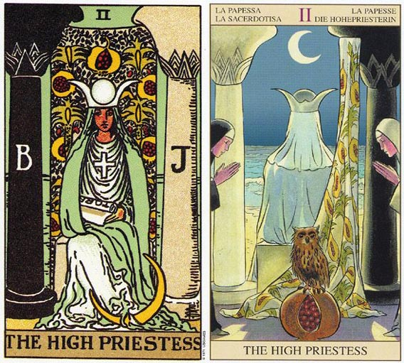

塔罗牌女祭祀（The High Pristess）解释
相关语：智能 对应星象：处女座
代表理念萌芽，同时也暗示要相信直觉，探索内心深处。 逆位的代表你忽略了你的直觉和内心感受被纯粹的理智影响。
女教皇意味着：这是向内探索、沉思，或按兵不动的时刻。女教皇端坐着，脚旁边有一轮弯月，手上握着一个卷轴，胸前挂着十字架，左右各有一根柱子，中间有一块布幔。布幔遮住了一池水，虽然看不到，但她感觉得到它就在那里，只是不十分充分理解它的存在。这池水在星星、月亮和节制牌中可以看得更清楚。
脚畔的月亮代表她的想象力，以及她超越眼前的东西看向远处的能力。左边的柱子（J）代表阳性（逻辑、务实和力量）；右边的柱子（B）则代表阴性（想象、直觉、接受性及恻隐之心）。它们代表二元性和对立性；生命中相对的力量如果善加驾驭将会带来成功。字母B和J分别代表波耶兹（Boaz）和亚肯（Jakin），他们是耶路撒冷圣殿的两根柱子名字。波耶兹（Boaz）代表的是神秘和消极，而亚肯（Jakin）则代表行动和意识的理解。
女教皇代表一段退缩和消极反省的时期，但这足以使内在的力量复苏。这张牌可以形容内在的智慧已经达到某一种深度了。她可以代表直觉、洞察，或是自生活中退隐下来，好好思考某个问题或形势。
手上握着的卷轴，上面很明显的有TORA这四个字母，另外还有一个H的字母被遮住了。Torah包含了犹太人的律法，以摩西之言五卷的形式呈现出来。Torah中有着很多的智慧及知识，但有部分被遮掩了，这暗示智慧和知识隐藏在原文中。虽然高位的女教皇握着这份卷轴，但是她并不知道内容。当她遇到可以和她阴性能量互补的男人（阳性力量）时，这个男人会知道其中的意思，而她也可以告诉他，该卷轴是从何而来的。
女教皇必须动用她的直觉来了解她身后那池水中到底藏了什么。当她这么做时，她将会遍历所有的大阿尔克纳牌，直到星星牌时，她才可以直接碰到那池水。
和圣杯侍卫一起出现时，女教皇代表占星学上的双鱼座。双鱼座必须学习的部分课题是：将梦想转为实际。这包括位所渴望的事物（布幔上的种子为象征）播种，然后在着手进行，使这些梦想成真。
女祭祀（The High Pristess）牌面解读
一个聪明的人或者女人，可能作出一个好决定。这个圣洁的女祭司，端正的坐著，手中还拿著一卷书，证明她充满智慧，放心交给她去决定好了。
女祭祀（The High Pristess）正位释义
开发出内在的神秘潜力，前途将有所变化的预言，深刻地思考，敏锐的洞察力，准确的直觉。
知性、优秀的判断力和洞察力、独立自主、有知己、善于交流、意志坚强、擅长精神方面的研究、柏拉图式的恋爱、冷淡的恋情
意味着在事业的每一步都要有准确的分析，小心利用高超的直觉来推测将要发生的每件事。周围的变化也是预测未来的重要依据，对未来走向不断进行逐步的修正。感情上有含蓄谨慎的倾向，首先通过被动的接受，然后得出自己的答案。追求并拥有高度精神层面的恋爱，对感情的发展有相当的掌握。
女祭祀（The High Pristess）逆位释义
过於洁癖，无知，贪心，目光短浅，自尊心过高，偏差的判断，有勇无谋，自命不凡。
无知、冲动、缺乏理解力、神经质、有洁癖、对人冷淡、自我封闭、与女性朋友争执、单相思、健康不佳、晚婚或独身主义、不孕
意味着事业上不能继续用精神加以分析，开始采用其它的方式决定未来的发展方向，并努力寻求外来的援助与合作。感情上冷漠迟缓，态度不明确，经过暂时的独处和内心的反思后，再次回到现实生活中才可能重新找到伴侣。
大体上的意义
它也是一张代表精神和心灵发展的牌，不代表具体事物，而代表可能性。你应该向内心探索，一切困惑的答案就藏在你的心中。
女教皇代表去思考可以导致实际结果的构想。这并不是一张代表具体事物的牌，而是一张代表可能性的牌。我们每个人都在我们的人生当中持续的耕耘和收获，而女教皇就是散播那些种子或理念的行动。
女教皇暗示你应该要相信你的直觉，因为在这一点上，有些东西你可能看不见。高位的女教皇是一张代表精神和心灵发展的牌。它代表了向内心探索的一段时期，以便为你人生的下一个阶段播种，或者去消化你在肉体的层次上所处理的事情。
倒立的女教皇
当女教皇以倒立当时出现时，依然可以代表双鱼座的人。它也可能暗示着：在暂时离群索居，或经过一番内心的发展之後，再度返回人生的一段时期。或许你已经度过了一段独处期，并将你的能量导入心灵的成长上，而你再度面对人生，以试炼你的新理念及理解的日子也已经到了。
它也可能是在描述你忽略了直觉，而喜欢运用头脑来解决问题。或许你需要倾听，需要听一听某些事物。而倾听你内在的自我，或你周边的事物，可以获得你达成目标的方法。
高位女教皇倒立时，可能意味你没有办法倾听你内在的声音，或你内在的知识是没有办法转化成行动。这个时候应当出去走走，认识新朋友，因为刚认识的人可以帮你介绍新的可能以及机会。例如，你可能会因此而找到新工作或新伴侣，或者得到崭新的理解。
以目前而言，内在发展的时候已经结束了，而且透过积极的寻找和他人的合作，会让你有更多的收获。
两性关系上的意义
在两性关系分析当中，女教皇可能代表一个双鱼座的人；或者可能意味着在你得以接收到这份关系给予你的种种之前，你需要先反求诸己。接受性、被动以及内在的发展，都是这张牌的意涵。
有时候女教皇暗示一种拥有高度精神或心灵发展的关系，你们俩人可以一同学习、成长和发展。